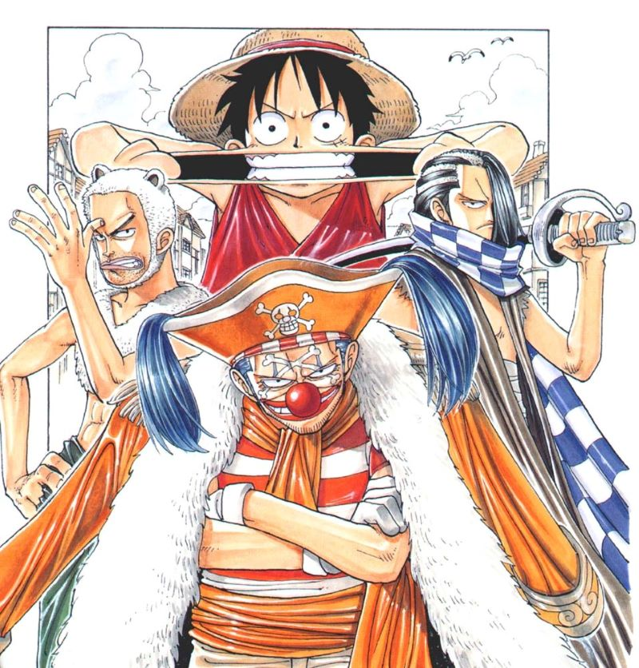

The Orange Town Arc is the second story arc in the East Blue Saga of the One Piece manga. The arc finds Monkey D. Luffy and Roronoa Zoro unwittingly crossing paths and butting heads with the pirate clown, Buggy, and his crew. This arc also marks the first appearance of Nami, the Straw Hat crew's future navigator.
The Thief and the Red-Nosed Pirate
This prompts Zoro to ask them who Buggy is, to which they explain that he is a feared pirate. Meanwhile, in a small village named Orange Town, a pirate ship designed like a carousel is docked near the town. One of the pirates on the ship spots Luffy and the bird, which prompts him to alert a captain. The captain then orders his men to shoot down the bird. In town, the same girl who robbed the pirates is running away from three more angry pirates who are chasing after her since she stole a map of the Grand Line. An explosion halts the chase for a moment and something crashes in the middle of the four. Luffy emerges from the smoke unharmed, wondering what shot at him. The girl suddenly gets an idea and calls Luffy her "boss", and asks him to take care of the pirates. The pirates crowd around Luffy while he continues to wonder what is going on. Suddenly, one of them gets tired of waiting and knocks Luffy's Straw Hat off of his head. This angers Luffy and he defeats the three pirates. The girl, who had been watching, is impressed by his abilities and introduces herself as Nami, a thief who specializes in robbing pirates.
Nami at first tries to form a partnership with Luffy, but when she finds out that he is a pirate, she switches to the idea of pretending to turn Luffy in to Buggy as her former boss. She tricks Luffy into letting her tie him up, and then takes him to Buggy. She then fools Buggy and his crew by telling him that Luffy is her former boss, and that she wants to join the Buggy Pirates instead. Buggy allows it, and locks Luffy up. Buggy then announces that the pirates will have a party to celebrate their new crew-member. Nami participates in the party, and ends up talking to Luffy in his cage. The party then grinds to a halt as Buggy decides to order Nami to kill Luffy with the Buggy Ball cannon. Nami, with the chants of the Buggy Pirates behind her, is unable to light the fuse due to her conscience. A member of the Buggy Pirates then takes the match from her and lights it himself. Fortunately, Zoro shows up in time to save them both and fights Buggy. He cuts Buggy into pieces, marveling at how easily he was defeated. However, when he turns around, he finds that Buggy's hand has managed to detach itself, stabbing Zoro in his midsection. Buggy then reveals he has eaten a Devil Fruit giving him the power to detach his body parts, separating into sections, rendering him invulnerable against sharp objects such as swords. However, the three of them manage to escape by firing Buggy's cannon at Buggy and his crew.
When she reached the first hills of the Italic Mountains, she had a last view back on the skyline of her hometown Bookmarksgrove, the headline of Alphabet Village and the subline of her own road, the Line Lane. Pityful a rethoric question ran over her cheek, then she continued her way.
The Town's Last Citizen: Boodle the Mayor
Escaping into the empty town, the three happen upon a dog, Chouchou, and the mayor of Orange Town, Boodle, who explains the dog's situation of guarding his master's pet shop, despite knowing his master is dead. The talk is interrupted by the arrival of Buggy's first mate, Mohji, and his pet lion, Richie. Nami and Boodle escape (Zoro is recovering from his wound in the Mayor's house), but Luffy is still stuck in the cage Buggy imprisoned him in when Nami turned him in.
Richie attacks Luffy, breaking the cage and sending Luffy flying through a house. Noticing the pet store, he then turns his attention toward it. Chouchou defends it to the best of his ability, but is no match for the lion. When Luffy comes back into the area, he see the pet shop burned to the ground and the dog heartbroken over it. Luffy then confronts Mohji and Richie and defeats both easily, then takes the last box of dog food left from the store and gives it to Chouchou.
Buggy's Flashy Finale: The Crew Departs
Boodle, inspired by Luffy's courage, goes to confront Buggy, but is almost choked to death. Luckily, Luffy, Zoro, and Nami arrive and save him, then knock him out to make sure he does not get in the way. Zoro fights with Cabaji, Buggy's second mate and swordsman, and despite his wounds, defeats him.
Luffy finally takes on Buggy while Nami sneaks off to steal Buggy's treasure. During the fight, Buggy reveals that he is Shanks' acquaintance and how he gained his powers and how he holds a grudge against him. He then sets off after Nami when he spots her taking his loot, but Luffy saves her. As Buggy separates his body parts again, preparing for another attack on Luffy, Nami steals some of them, tying the stolen body parts together. Buggy is left with just his hands, feet and head, vulnerable for Luffy to send him flying. Nami gives Luffy the map of the Grand Line as she thanks him and agrees to partner up with him for the time being.
As the trio starts to relax, the townspeople come back into the town, and seeing their mayor knocked out, demand answers. Luffy replies that the three are pirates, and the townspeople chase them out of town, though the three manage to lose them thanks to Chouchou's intervention.
Boodle wakes up and set after them himself just as Luffy, Zoro, and Nami leave the island on two small boats, thanking the three from the dock as they sail off. To Nami's surprise however, Luffy had deliberately left one of her treasure bags behind that was worth File:Beli.png500,000 to help the people of Orange Town rebuild their homes. She threatened Luffy never to do that again. With that, the three pirate sail off to continue their journey to the Grand Line.